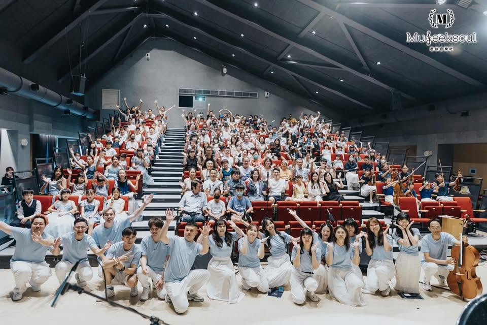

Intermission, on the lawn.中場・走到大樹下
從滿座的音樂廳，到大樹下的草地音樂會——年度成果展，把這一年的練習唱回給家人與彼此聽。

草地音樂會為年度成果展 · 真實活動。下期檔期將由教室公告

A house, full of music.
惠歆音樂，用陪伴，培養每一顆音樂靈魂。
Museeksoul — Seek your music soul.Every player on this stage began with one note. 喜歡，才是最強大的動力。
音樂園丁，用無比的熱忱與耐心澆灌每位音樂種子，以期萌芽、成長、茁壯，陪伴莘莘學子綻放出屬於自己的音樂之花。封面這一廳的人，都是從第一個音符開始的。
每一門課都掛上「年齡 × 目的」兩組標籤，完整曲目單與標籤系統收在課程頁。
翻開完整曲目單 →從滿座的音樂廳，到大樹下的草地音樂會——年度成果展，把這一年的練習唱回給家人與彼此聽。
草地音樂會為年度成果展 · 真實活動。下期檔期將由教室公告